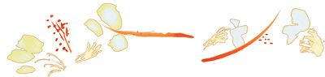

Positive and Negative Thoughts
Your thoughts are both the words you hear in your head and the words you speak out loud. When you say to somebody, “What a beautiful day,” you had the thought first and then spoke the words. Your thoughts also become your actions. When you get out of bed in the morning, you had the thought of getting out of bed before you took action. You can’t take any action without thinking the thought first.
It’s your thoughts that determine whether your words and actions will be positive or negative. But how do you know whether your thoughts are positive or negative? Your thoughts are positive when they are thoughts of what you want and love! And negative thoughts are thoughts of what you don’t want and don’t love. It is that simple and that easy.
Whatever you want in your life, you want it because you love it. Take a moment and think about it. You don’t want things you don’t love, do you? Every person only wants what they love; nobody wants what they don’t love.
When you think or talk about the things you want and love, such as, “I love those shoes, they’re beautiful,” your thoughts are positive, and those positive thoughts will come back to you as the things you love – beautiful shoes. When you think or talk about the things you don’t want and don’t love, such as “Look at the price of those shoes, that’s highway robbery,” your thoughts are negative, and those negative thoughts will come back to you as the things you don’t love – things that are too expensive for you.
Most people think and talk about what they don’t love more than they think and talk about what they love. They give out more negativity than love, and in doing so they are inadvertently depriving themselves of all the good things in life.
It’s impossible to have a great life without love. People who have great lives think and talk about what they love more than what they don’t love! And people who are struggling think and talk about what they don’t love more than what they do love!

“One word frees us of all the weight and pain of life. That word is love.”
Sophocles (496-406 BC)
GREEK PLAYWRIGHT
